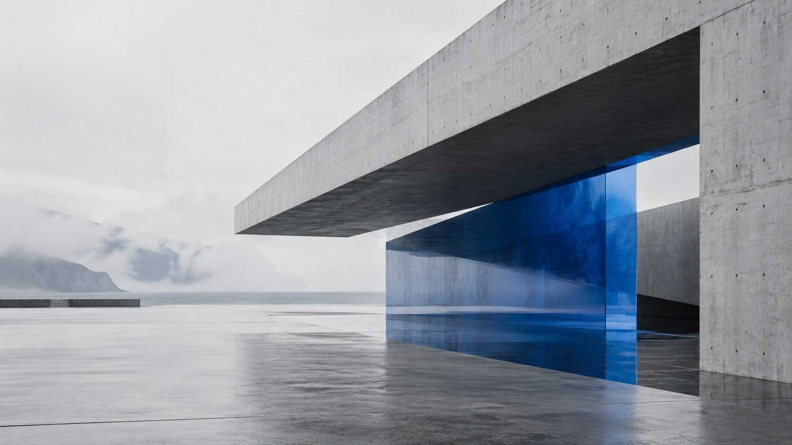

Web design in the Balkans:
competing beyond the region
A regional business should not look regional by limitation. The right digital system can preserve local character while meeting the standards international buyers already expect.

Web design in the Balkans is entering a more demanding phase. Customers compare a Zagreb architecture practice with studios in Copenhagen, a Sarajevo software company with competitors in Berlin, and a Belgrade hospitality brand with destinations across Europe. Geography still shapes identity, but it no longer lowers the digital benchmark.
What international visitors judge in the first few seconds
A visitor does not begin by studying your company history. They register clarity, confidence and relevance. Is the offer understandable? Does the website feel current? Can they find evidence that the business is reliable? Is the English version as considered as the local one?
For a Balkan company selling beyond its home market, the website often carries more responsibility than it would for an established Western European name. It has to remove uncertainty before a sales conversation begins. Strong typography, precise spacing and original art direction help, but credibility also comes from useful project detail, specific outcomes, real team information and a frictionless contact path.
Regional character is an advantage when it is intentional
The answer is not to imitate every minimalist technology website from London or Amsterdam. The region has its own visual intelligence: strong contrasts, material honesty, modernist architecture, craft, hospitality and a direct communication style. These references can create distinction when they are translated with restraint.
Global quality does not require erasing where a brand comes from. It requires expressing that origin with enough clarity for anyone to understand it.
A distinctive Balkan brand can use local photography, language and cultural references while keeping navigation, performance and conversion patterns familiar. This balance is more memorable than a generic template and more usable than a concept that prioritises visual novelty over the visitor.
Five foundations of a high-performing regional website
- A focused position. Lead with the problem you solve and the audience you solve it for. “Quality solutions” says nothing; a specific promise creates a reason to continue.
- Proof with context. Replace logo walls with concise case studies. Explain the challenge, your role, the decision and the result.
- Mobile-first speed. Many regional audiences discover businesses through social platforms and messaging apps. A heavy mobile experience loses that attention immediately.
- Language architecture. Croatian, Bosnian, Serbian, Slovenian and English pages need intentional URLs, metadata and internal links—not a translation widget.
- A useful next step. Make contact feel proportionate. A complex enquiry form is rarely necessary for an early conversation.
Design and development should be one decision
A beautiful concept that becomes slow, inconsistent or difficult to update is not premium. In our approach, interaction, responsive behaviour and content structure are considered before visual details are finalised. That makes the finished website feel coherent from a large desktop display to a mid-range mobile device on a slower connection.
This is especially important for businesses targeting several Balkan markets. Content will grow, languages may be added and campaigns will change. A clear component system makes expansion cheaper and protects the visual quality of the brand over time. Our web design and development services are structured around that continuity.
How to know whether the redesign is working
Do not measure success only by whether the new site “looks better.” Establish a small set of business signals before launch: qualified enquiries, visits to key service pages, case-study completion, organic impressions by market and conversion rate by device. Watch how those signals change over several months.
Search visibility takes time, particularly across multiple languages, but clarity has an immediate effect. Sales teams receive better-informed leads. Prospects reference specific work. Good candidates understand the company before applying. Those are signs that design is doing commercial work.